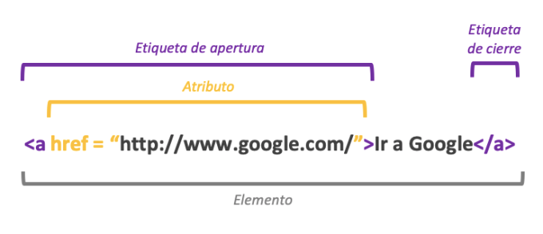

El propósito de ésta página es la elaboración de recursos educativos digitales para dinamizar las estrategias de aprendizaje tomando como referencia los temas de Etiquetas básicas de HTML, atributos y valores mostrando la información mediante la creación de un sitio WEB mediante diferentes herramientas como GitHub.
Etiquetas Básicas de HTML
HTML es un markup language, lo que significa que está escrito con códigos que puede leer una persino si que sea necesario compilarlo primero. En otras palabras, el texto en un página web marcado con estos códigos para dar instrucciones al navegador web sobre cómo mostrar el texto. Estas etiquetas de marcado son las propias etiquetas HTML.
Cuando escribes código en HTML, estás escribiendo etiquetas HTML. Todas las etiquetas están hechas con un número de partes específicas, incluyendo:
- El carácter "menor que" <
- Una palabra o carácter que determina qué etiqueta se está escribiendo
- Cualquier número de atributos HTML que se quiera usar, escritos de la forma nombre = "valor"
- El carácter "mayor que" >
Hay una serie de etiquetas que son las más usadas para crear cualquier documento HTML, como por ejemplo:
- body para el contenido
- head para información sobre el documento
- div división dentro del contenido
- a para enlaces
- strong para poner el texto en negrita
- br para saltos de línea
- h1 hasta h6 para títulos dentro del contenido
- img para añadir imágenes al documento
- ol para listas ordenadas, ul para listas desordenadas, li para elmentos dentro de la lista
- p para parágrafos
- span para estilos de una parte del texto

Atributos y Valores
Los elementos en HTML tienen atributos; estos son valores adicionales que configuran los elementos o ajustan su comportamiento de diversas formas para cumplir los criterios de los usuarios.
En HTML, la mayoria de los atributos tienen dos caras: el atributo de contenido y el atributo IDL
El atributo de contenido es aquel que se define desde el contenido y puedes definirlo u obtenerlo. El atributo de contenido es siempre un string incluso cuando el valor esperado es un integer. Por ejemplo, para definir el maxlength de un input a 42 usando el atributo de contenido, se debe llamar a setAttribute("maxlength", "42") en ese elemento.
El atributo IDL, tambien conocido como propiedad JavaScript. Estos son atributos que se pueden leer o definir usando JavaScript. El atributo IDL siempre va a usar en el atributo de contenido subyacente para retornar un valor cuando o obtiene y lo guarda en el atributo de contenido cuando es definido. En otras palabras el atributo IDL, en esencia, refleja los atributos de contenido.
